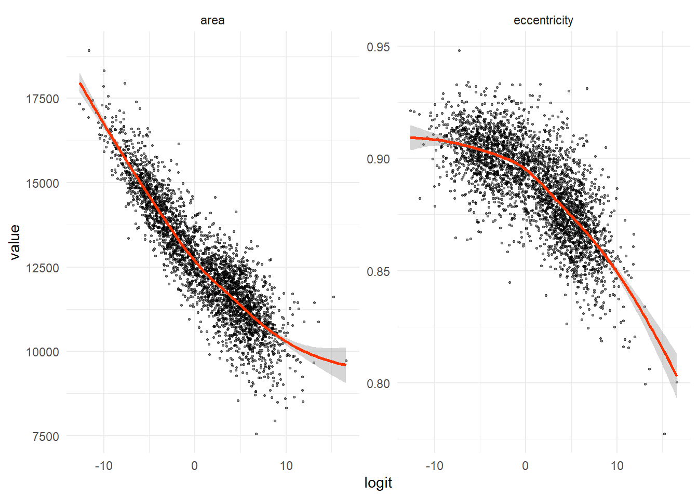

#http://archive.ics.uci.edu/dataset/545/rice+cammeo+and+osmancik (data information)
#https://www.kaggle.com/datasets/muratkokludataset/rice-dataset-commeo-and-osmancik (.xlsx format)
#load libraries
library(tidyverse)
library(readxl)
library(caret)
library(car)
library(caTools)
library(ROCR)
library(MASS)
library(pROC)
#set seed for reproducibility
set.seed(12345)Logistic Regression for Rice Type Prediction
Loading data
#load data
main<-read_excel("data/rice.xlsx")
#reformat binary variable as a factor
main$Class <- as.factor(main$Class)
#make all names lower case
names(main)<-tolower(names(main))
#preview
main# A tibble: 3,810 × 8
area perimeter major_axis_length minor_axis_length eccentricity convex_area
<dbl> <dbl> <dbl> <dbl> <dbl> <dbl>
1 15231 526. 230. 85.1 0.929 15617
2 14656 494. 206. 91.7 0.895 15072
3 14634 501. 214. 87.8 0.912 14954
4 13176 458. 193. 87.4 0.892 13368
5 14688 507. 212. 89.3 0.907 15262
6 13479 477. 200. 86.7 0.901 13786
7 15757 509. 207. 98.3 0.880 16150
8 16405 527. 222. 95.4 0.903 16837
9 14534 484. 197. 95.1 0.875 14932
10 13485 472. 198. 87.7 0.897 13734
# ℹ 3,800 more rows
# ℹ 2 more variables: extent <dbl>, class <fct>Logistic Regression Assumptions
Logistic regression requires the following assumptions are met:
- binary dependent variable (okay)
- independent observations (okay)
- low or no multicollinearity (TBD)
- linear relationship between the input variables and the log odds of the output variable
- large sample size (okay)
Binary Dependent Variable
#check the number of levels in the class variable
length(levels(main$class))[1] 2levels(main$class)[1] "Cammeo" "Osmancik"Splitting the Data
For our inquiry, we’ll split the dataset into a training set and a test set which will not be used to train the model. That test set can be used to evaluate the model later.
# Split the dataset into training and testing sets
split <- createDataPartition(main$class, p = .8, list = FALSE)
data_train <- main[split,]
data_test <- main[-split,]
#view how the classifications are distributed in the training data
table <- table(data_train$class)
table_full <- cbind(table,prop.table(table))
colnames(table_full)<-c("count", "proportion")
#results
table_full count proportion
Cammeo 1304 0.4278215
Osmancik 1744 0.5721785Multicollinearity
Multicollinearity is bad and it suggests you don’t need both of the related variables. Including them can weaken performance.
Interpretation:
- A value of 1: no multicollinearity
- A value of 1-5: moderate but tolerable multicollinearity
- A value of 5+: potentially severe multicollinearity (unreliable results; adjust model)
#Variance Inflation Factor (VIF)
#https://saturncloud.io/blog/how-to-calculate-vif-for-ordinal-logistic-regression-multicollinearity-in-r/
#VIF is a measure of the degree to which a predictor variable in a regression model can be explained by other predictor variables. It is calculated by regressing each predictor variable against all other predictor variables in the model and then taking the reciprocal of the R-squared value. The resulting value is known as the VIF, and it ranges from 1 to infinity. A VIF of 1 indicates no multicollinearity, while a VIF greater than 1 indicates the degree of multicollinearity.
model_vif <- glm(class ~ area+eccentricity, data = data_train, family = "binomial")
vif(model_vif) area eccentricity
1.220169 1.220169 That other assumption
We can check the assumption that there exists a linear relationship between the input variables and the log odds (logit) of the output variable by examining the results visually. The assumption is that the relationship is essentially linear. From the results, the main mass of the data seem to be linear while the few datapoints on the ends of the values are influencing the curve to bend slightly.
#http://www.sthda.com/english/articles/36-classification-methods-essentials/148-logistic-regression-assumptions-and-diagnostics-in-r/
# Predict the probability of belonging to the "positive" class which is Cammeo here
#Thus for a default binomial model the default predictions are of log-odds (probabilities on logit scale) and type = "response" gives the predicted probabilities.
probabilities <- predict(model_vif, type = "response")
predicted.classes <- ifelse(probabilities > 0.5, "Cammeo", "Osmancik")
# Set up a temporary dataset using only the numeric variables of interest
mydata <- tibble(area=data_train$area, eccentricity=data_train$eccentricity)
#get the names of the variables
predictor <- colnames(mydata)
# calculate the logit values and append them to the dataset
mydata <- mydata %>%
mutate(logit = log(probabilities/(1-probabilities))) %>%
gather(key = "predictor", value = "value", -logit)
#results
head(mydata)# A tibble: 6 × 3
logit predictor value
<dbl> <chr> <dbl>
1 -9.10 area 15231
2 -6.00 area 14634
3 -0.716 area 13176
4 -5.51 area 14688
5 -2.39 area 13479
6 -1.74 area 14534#plot the results (logit vs value)
ggplot(mydata, aes(logit, value))+
geom_point(size = 0.5, alpha = 0.5) +
geom_smooth(method = "loess", col="#ff3300") +
theme_minimal() +
facet_wrap(~predictor, scales = "free_y")`geom_smooth()` using formula = 'y ~ x'
The Model and the Confusion Matrix
A confusion matrix is a table that works as a measurement of model performance by showing predicted and actual values. You want to see a high degree of correlation between predicted and actual values.
# Train the logistic regression model using only the post-split training data
model <- train(class ~ area+eccentricity, data = data_train, method = "glm", family = "binomial")
# Use the trained model to predict the outcomes
p <- predict(model, data_test)
# Create the confusion matrix
cm <- confusionMatrix(p, data_test$class)
# Print the confusion matrix
print(cm)Confusion Matrix and Statistics
Reference
Prediction Cammeo Osmancik
Cammeo 291 30
Osmancik 35 406
Accuracy : 0.9147
95% CI : (0.8926, 0.9336)
No Information Rate : 0.5722
P-Value [Acc > NIR] : <2e-16
Kappa : 0.8254
Mcnemar's Test P-Value : 0.6198
Sensitivity : 0.8926
Specificity : 0.9312
Pos Pred Value : 0.9065
Neg Pred Value : 0.9206
Prevalence : 0.4278
Detection Rate : 0.3819
Detection Prevalence : 0.4213
Balanced Accuracy : 0.9119
'Positive' Class : Cammeo
Performance Check with Repeated K-fold Cross Validation
Cross-validation is a technique for evaluating how well your model performs on new data. The big idea is to build a model on a part of your dataset and then apply your model to the rest of your data. Then repeat that some number of times. In this specific method, the k value determines how many separate piles your data are divided into and the repetitions number is the other value. So, in this case we will randomly split the data into ten parts, use one of the parts for validation, nine parts for training, and then repeat all of that three times. Then, the average performance across all three repetitions will be calculated for a final value.
#cross validation
#https://machinelearningmastery.com/k-fold-cross-validation/
#Control the computational nuances of the train function
tc <- trainControl(method = "repeatedcv", number = 10, repeats = 3)
#This function sets up a grid of tuning parameters for a number of classification and regression routines,
#fits each model and calculates a resampling based performance measure.
cv <- train(class~area+eccentricity, data = data_train, method = "glm", trControl = tc)
#results
print(cv)Generalized Linear Model
3048 samples
2 predictor
2 classes: 'Cammeo', 'Osmancik'
No pre-processing
Resampling: Cross-Validated (10 fold, repeated 3 times)
Summary of sample sizes: 2744, 2743, 2743, 2743, 2743, 2743, ...
Resampling results:
Accuracy Kappa
0.9300085 0.8571773#https://machinelearningmastery.com/machine-learning-evaluation-metrics-in-r/
#Accuracy is the percentage of correctly classified instances out of all instances. It is more useful on a binary classification than multi-class classification problems because it can be less clear exactly how the accuracy breaks down across those classes.
#Kappa or Cohen’s Kappa is like classification accuracy, except that it is normalized at the baseline of random chance on your dataset. It is a more useful measure to use on problems that have an imbalance in the classes (e.g. 70-30 split for classes 0 and 1 and you can achieve 70% accuracy by predicting all instances are for class 0).Performance Check with ROC
The ROC value represents the ability of a model to correctly distinguish between the classes where 1.0 suggests perfect prediction and 0.5 suggests only random results. Here, we set up another model fit but use classProbs=TRUE to leverage the class probabilities so we can get an ROC value. The results are quite good at ~97.7%.
control <- trainControl(method="cv", number=5, classProbs=TRUE, summaryFunction=twoClassSummary)
fit <- train(class~area+eccentricity, data = data_train, method = "glm", metric="ROC", trControl = control)
print(fit)Generalized Linear Model
3048 samples
2 predictor
2 classes: 'Cammeo', 'Osmancik'
No pre-processing
Resampling: Cross-Validated (5 fold)
Summary of sample sizes: 2438, 2438, 2438, 2438, 2440
Resampling results:
ROC Sens Spec
0.9791045 0.9233098 0.9357755Class Prediction with New Data
Once you have a model you’re happy with, you can apply it to actual new data to put those individuals into appropriate classes. Then you can make decisions about those individuals as needed. For example, you may decided to extend or not extend someone a financial loan.
#define new data frame
data_new = tibble(id=c(1,2,3),
area=c(13000, 14000, 15000),
eccentricity=c(0.80,0.85,0.90))
#use model to predict value of am for all new cars
data_new$predicted_class <- predict(model, data_new, type="raw")
#view data frame
data_new # A tibble: 3 × 4
id area eccentricity predicted_class
<dbl> <dbl> <dbl> <fct>
1 1 13000 0.8 Osmancik
2 2 14000 0.85 Osmancik
3 3 15000 0.9 Cammeo